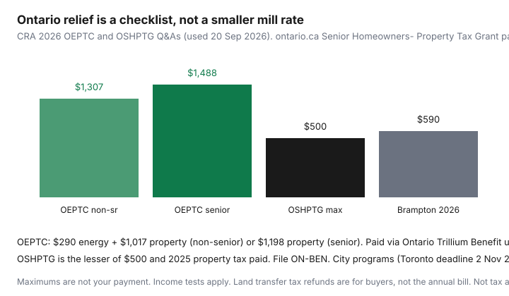

Housing · Canada
Ontario property tax relief and credits homeowners should check annually
Eligible Ontario owners miss relief because nothing about it feels like a “grant cheque in the mail” until you file. The mill rate is set at city hall. The credits sit on a tax return and a municipal PDF. If you only open the tax bill to pay it, you will keep paying the full instalment even when a form would have offset hundreds of dollars.
Date-stamped 2026 provincial pieces (CRA Ontario Energy and Property Tax Credit Q&A, used 20 Sep 2026): maximum OEPTC $1,307 for non-seniors ($290 energy + $1,017 property) and $1,488 for seniors ($290 + $1,198). Ontario Senior Homeowners’ Property Tax Grant maximum is the lesser of $500 and 2025 property tax paid (CRA OSHPTG Q&A; ontario.ca page updated 2 Jan 2026). Those are ceilings, not your payment.
Disclosure: There is no natural affiliate product in a property-tax credit checklist. Saving Optimizer does not claim CRA, provincial, or municipal partnerships. This is educational process math, not tax or legal advice. Pay instalments on the due date.
Key takeaways
- Municipal rates × assessed value = the bill. Credits are a separate stack.
- 2026 OEPTC max $1,307 / $1,488. OSHPTG max $500. File ON-BEN.
- City programs are their own form — Toronto 2026 deadline 2 Nov 2026; Brampton rebate $590.
- Land transfer refunds are for buyers, not the annual bill.
- Appealing MPAC’s 2016 CVA does not pause instalments.
Municipal vs provincial pieces of the bill
Your final tax is generally assessed value × (municipal + education) rates, plus any local levies. Ontario’s 2026 assessed values are still 1 January 2016 current value unless the property changed (MPAC, used 20 Sep 2026 — same stamp as the assessment-review page). Council can raise the rate even when the CVA is frozen. Provincial credits do not rewrite that arithmetic. They reimburse or offset after you qualify.

Common credits/rebates seniors and low-income households may qualify for (verify)
| Program | 2026 snapshot | How you apply |
|---|---|---|
| OEPTC (property + energy) | Max $1,307 non-senior / $1,488 senior | ON-BEN with the T1; usually paid via Ontario Trillium Benefit |
| OSHPTG | Lesser of $500 and 2025 property tax; income tests on ontario.ca (single < $50,000 / couple < $60,000 conversation; $500 at AFNI $35,000 single / $45,000 couple) | ON-BEN; report tax paid on line 61120 |
| City senior / disability rebate | Local — Brampton $590 for 2026; Toronto has a combined tax/water/waste package | Municipal PDF or portal; annual |
| Hardship / deferral | Some cities offer payment plans or deferral for seniors | Tax office, not CRA |
CRA notes the 2026 OSHPTG can reduce the property-tax component of OEPTC if the two together exceed 2025 tax paid — most seniors are unaffected. You still apply for both if you might qualify for either. Renters can have an OEPTC property component in some situations; this page is for owners who pay the municipal bill.
How to find your city-specific relief pages
Go to the municipality’s tax page, not a Facebook group. Search “property tax rebate” + city + year. Download this year’s application. Note: household income definition (whose CRA notice of assessment), owner-occupancy months, whether every owner must qualify, and whether arrears block the file. Toronto’s 2026 package states a 2 November 2026 deadline and a household-income conversation that includes a $62,000 figure on the city PDF — verify the live form. Brampton’s tax office published a $590 2026 rebate with a 31 December application date. Neighbouring cities will not match.
Deadlines and application habits
- File the T1 on time so ON-BEN is not a November surprise. Direct deposit is how OEPTC/OSHPTG actually arrive.
- Keep the property-tax bill PDF; line 61120 wants a number, not a vibe.
- Put the municipal deadline on the same calendar as the instalment dates.
- Re-apply every year. Last year’s approval is not a standing order.
- If a spouse died or moved, read the owner tests again before you skip the form.
Interaction with land transfer tax (buyers) vs ongoing tax (owners)
First-time Ontario LTT refunds (max $4,000; Toronto MLTT rebate up to $4,475; ontario.ca updated 10 Feb 2026) are closing-week cash. They do not reduce MPAC’s CVA or this year’s mill rate. A new owner still meets the city’s instalment calendar and, if the lender escrows, the tax portion of the mortgage — see escrow vs self-pay. Do not mentally spend an LTT refund on year-two credits you have not applied for.
Budgeting for instalments vs lump sum
Most Ontario cities offer several instalments or a pre-authorized plan. A $6,000 bill is four $1,500 problems if you do not PAD $500 a month. Lump-sum discounts, where they still exist, are a cash-flow choice — not a credit. Missing a due date while you wait for OEPTC is how penalties erase the credit. If you are appealing assessment, you still pay.
Annual checklist each tax season
- January–February: read the assessment notice. Decide if an MPAC Request for Reconsideration is warranted.
- When the tax bill arrives: write instalment dates; set the PAD; save the PDF.
- Tax-filing window: complete ON-BEN; enter property tax paid; apply for OSHPTG if age and income fit.
- Municipal window: submit the senior/disability rebate; Toronto 2026: 2 Nov.
- After CRA processes: check that OTB/OSHPTG landed; if not, read the notice before you call it “a scam.”
- November: re-shop home insurance — often a larger lever than a $90 credit miss.
Sources & date stamps
- CRA, Ontario Energy and Property Tax Credit Q&A — 2026 max $1,307 / $1,488 (used 20 Sep 2026).
- CRA, Ontario Senior Homeowners’ Property Tax Grant Q&A — 2026 max $500; interaction with OEPTC.
- ontario.ca, Senior Homeowners’ Property Tax Grant — updated 2 Jan 2026; income bands and ON-BEN line 61120.
- ontario.ca, Property tax — municipal plus education rates (used 20 Sep 2026).
- City of Brampton tax relief page — 2026 rebate $590; City of Toronto 2026 relief application — deadline 2 Nov 2026.
- MPAC — 2026 tax year still 1 Jan 2016 CVA unless the property changed.
Frequently asked questions
What Ontario property tax relief should homeowners check each year?
The 2026 Ontario Energy and Property Tax Credit (maximum $1,307 non-senior / $1,488 senior), the Ontario Senior Homeowners’ Property Tax Grant (maximum $500), and your city’s low-income senior or disability rebate. None of these change the mill rate by themselves. File ON-BEN with the return and the municipal form on its own deadline.
Is the land transfer tax refund the same as property tax relief?
No. Ontario’s first-time land transfer refund (maximum $4,000; Toronto municipal rebate up to $4,475) is a buyer closing-cost program. The annual bill is municipal plus education tax on the assessed value. Do not budget a refund against this year’s instalments unless you are actually closing a first purchase.
How do I find my city’s rebate page?
Search the municipality name plus “property tax rebate seniors” or “tax relief.” Toronto’s 2026 property tax, water, and solid-waste relief application lists a 2 November 2026 deadline. Brampton’s 2026 rebate is $590. Eligibility and amounts are local — read this year’s PDF, not a 2022 blog.
Does an assessment appeal replace these credits?
No. An MPAC Request for Reconsideration fights the 1 January 2016 current value (still the 2026 roll unless the property changed). Credits and grants fight the bill you already owe if you meet income tests. Do both when both apply, and still pay the instalment on time.
Is this tax advice?
No. Educational checklist. Confirm live amounts on canada.ca, ontario.ca, and your municipal page. There is no natural affiliate product on this page.